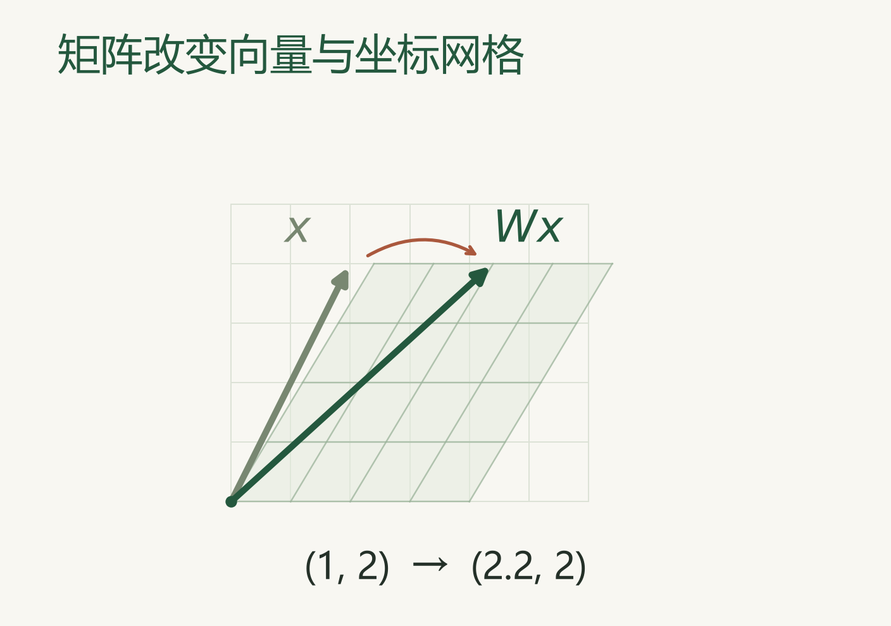
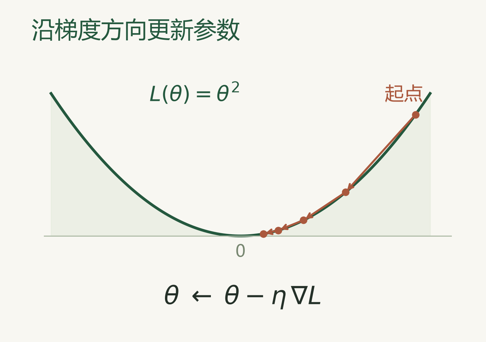
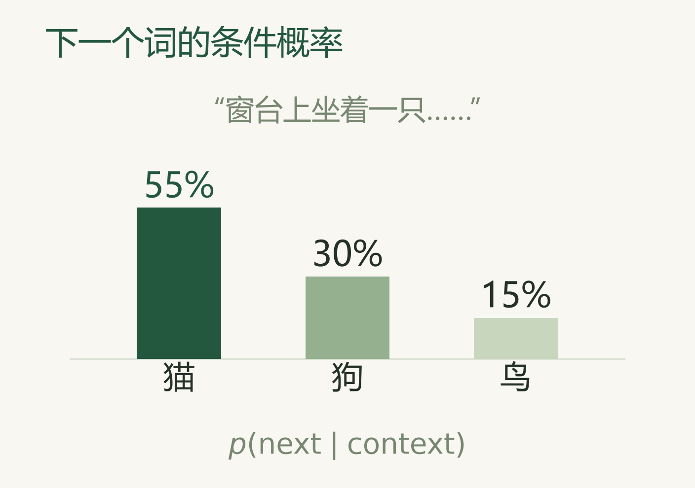
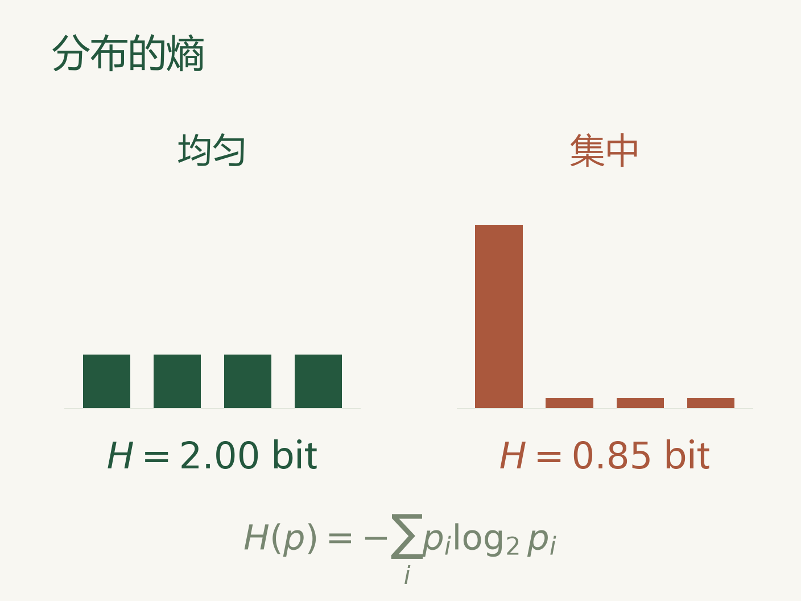
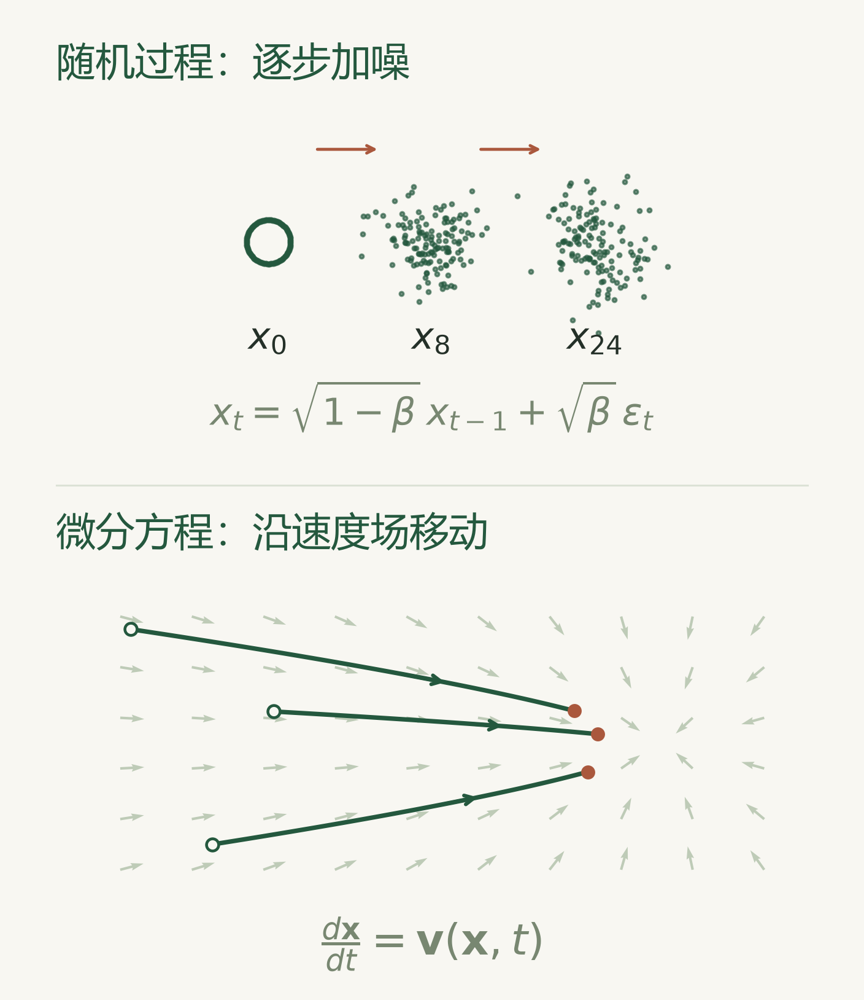

做研究可以自顶向下，但也要由浅入深的学习理解数学、ML/DL 和计算机，打好基础。一个推荐的学习心法是按需学习而非顺序学习，并灵活运用课程、blog 等多种学习资源。
可以先学习到不影响理解的层次，也可以针对你的项目、论文方向系统补充相关知识。我们主要需要学习的基础知识是 Python、计算机、机器学习、深度学习与一些数学基础。
Crash Course Artificial Intelligence 是一套科普入门课，介绍监督学习、神经网络、自然语言处理、强化学习、机器人和推荐系统，可以由此了解 AI 的主要问题和方法。

Python 与计算机
Python 广泛用于数据处理、模型训练和实验。除了语言本身，运行项目还会涉及环境配置、依赖、终端和版本管理。
- CS50P：介绍变量、条件、循环、函数、异常处理、文件操作和测试。
- MIT 6.100L：通过 Python 介绍编程与计算思维，配有视频、讲义和编程作业。
- Missing Semester：介绍 Shell、Git、调试以及开发中常用的工具。

AI 项目里还会经常用到 PyTorch 和 Hugging Face。PyTorch 用于张量计算、构建神经网络和训练模型；Hugging Face 提供模型、数据集和相关工具。
PyTorch 基础教程 展示了数据加载、模型定义、自动求导和参数更新的完整过程；Hugging Face Hub 文档介绍模型与数据集的查找、下载和分享。
VS Code 等编辑器中的编程 AI，也可以参与代码阅读、功能实现、调试和测试。相关使用方法见AI 工具。
计算机基础还包括数据结构、算法、操作系统、网络和体系结构。Crash Course Computer Science 介绍这些领域的基本面貌；MIT 6.006 系统讲解数据结构、算法设计与复杂度分析。CS 自学指南整理了各领域的课程、教材和学习经验。
机器学习
机器学习研究怎样从数据中学习规律，并将它用于预测和决策。模型在训练数据上表现很好，换一批数据却可能出错；模型变得复杂，也可能学到训练样本中的偶然特征。训练集与测试集、过拟合、泛化、正则化和模型选择，都与这些问题有关。
这些概念贯穿经典机器学习与深度学习。今天研究大模型的数据、训练和评测，仍然需要理解模型学到了什么，以及实验结果能够说明什么。
An Introduction to Statistical Learning 用回归、分类等问题介绍统计学习，配有图示、案例和代码实验。它对模型选择、重采样和正则化的讲解，也能帮助理解实际实验中的比较方法。
李宏毅机器学习课程 提供中文视频，结合模型和应用讲解机器学习与深度学习。Stanford CS229 更侧重方法的数学推导，涵盖监督学习、无监督学习和概率模型。

深度学习
深度学习使用多层神经网络学习数据的表示。图像中的局部特征、文本中的上下文关系，都可以在训练中逐渐形成。
网络结构决定信息怎样处理，损失函数规定训练目标，优化器根据梯度更新参数。
动手学深度学习（D2L）把数学解释、模型实现和实验放在一起，内容包括线性模型、多层感知机、CNN、RNN、Attention 和 Transformer，也有中文配套课程。

3Blue1Brown 神经网络系列 用可视化解释神经网络、梯度下降和反向传播。fast.ai 从实际应用出发，在训练模型的过程中逐步展开深度学习的方法。

Neural Networks: Zero to Hero 从 micrograd 的自动求导引擎开始，通过 makemore 字符语言模型介绍神经网络的训练，随后实现 GPT 和 tokenizer。课程中的代码规模逐渐增加，梯度、损失和参数更新这些基本概念也会不断出现在后面的模型里。

数学基础
线性代数、微积分、概率统计是模型训练中经常用到的数学基础。信息论中的熵、交叉熵和 KL 散度也很常见；随机过程与微分方程则更多出现在强化学习、Diffusion、Flow 等具体方法中。
线性代数
向量、矩阵、内积和线性变换，是表示数据和组织神经网络计算的基本工具。Transformer 中的 token 表示、Q/K/V 投影和注意力计算，都能对应到具体的矩阵运算。特征值、奇异值分解和低秩近似，则会出现在表示分析、模型压缩等问题中。

3Blue1Brown 线性代数 着重解释几何直觉；MIT 18.06 系统讲解线性代数及其应用。


微积分与优化
导数描述变化率，梯度给出函数变化的方向，链式法则将多层计算连接起来。反向传播利用这些关系计算参数对损失的影响，SGD、Adam 等优化方法再据此更新参数。学习率、梯度尺度和优化器的选择，也会影响模型的收敛与训练稳定性。

3Blue1Brown 微积分 介绍导数、积分和链式法则的直观含义；D2L 的优化章节结合代码讲解梯度下降及常用优化器。

概率论与统计
条件概率、期望、方差和贝叶斯公式，经常出现在模型定义与训练目标中。语言模型预测下一个 token 的概率，生成模型学习数据分布，强化学习则关心行动带来的期望回报。

统计估计讨论如何利用观测数据确定模型参数。最大似然估计（MLE）寻找最能解释数据的参数；最大后验估计（MAP）还结合了参数的先验。理解它们，也就能进一步理解训练目标与概率模型之间的关系。
Seeing Theory 用交互演示介绍概率统计；Harvard Stat 110 系统讲解概率论。MLE、MAP 与机器学习模型的联系，也可以结合 CS229 讲义阅读。
信息论
熵描述分布的不确定性，交叉熵常用于训练分类器和语言模型，KL 散度衡量两个分布之间的差异。这些概念会出现在语言模型的训练损失、知识蒸馏、变分推断，以及后训练中对策略变化的约束里。

MIT 6.441 信息论 提供系统讲义，其中熵、互信息和相对熵与机器学习联系密切。
随机过程与微分方程
随机过程描述状态随时间的变化。马尔科夫链通过当前状态和转移概率描述下一步，DDPM 的逐步加噪过程就采用了这样的建模方式。强化学习中的马尔科夫决策过程，还加入了行动和奖励。
MIT 6.041SC 涵盖概率基础、随机过程、马尔科夫链和统计推断。
连续时间的生成模型还会用到微分方程。速度场描述样本怎样运动，数值积分把连续过程变成可以执行的采样步骤。这些知识与 Flow Matching、Rectified Flow 直接相连，相关讲解见下面的生成模型部分。

Mathematics for Machine Learning 将线性代数、矩阵分解、微积分、概率和优化放在机器学习的背景下介绍，也适合把这些数学知识联系起来。
基础知识在具体模型中怎么用
Transformer、生成模型和强化学习是三个典型的例子。Attention 涉及向量表示和矩阵运算；VAE、Diffusion 和 Flow 将概率建模、优化与微分方程联系起来；Policy Gradient、PPO 和 GRPO 则涉及期望回报、概率比率、梯度与策略优化。
Transformer 与语言模型
Transformer 把向量表示、注意力和神经网络训练结合起来：token 被映射成向量，不同位置通过 Attention 交换信息，模型根据训练目标调整参数。自回归语言模型进一步将一段文本的概率分解为逐个 token 的条件概率，并通过预测后续文本进行训练。
The Illustrated Transformer 用架构图解释各个模块；Transformer Explainer 展示可交互的计算过程；Annotated Transformer 提供带讲解的实现。
Super Study Guide: Transformers & Large Language Models 从神经网络与 Embedding 展开到 Transformer、语言模型及其训练方法。更具体的预训练、后训练与推理问题见大语言模型。
表示学习与生成模型
表示学习关心怎样从数据中提取和组织特征，生成建模关心怎样学习数据分布并产生新样本。两者也会结合，例如 VAE 同时学习潜在表示与生成过程。
VAE 将概率建模与变分推断联系起来；GAN 通过生成器与判别器的对抗进行训练；DDPM 学习逐步去噪；Flow Matching 则学习连接噪声与数据的速度场。它们背后的概率分布、期望、KL 散度和微分方程，都来自前面的基础知识。
Flow Matching Guide and Code 将数学讲解与代码示例放在一起；Rectified Flow 教程提供讲义、代码和 ICML tutorial 视频，讨论生成轨迹、采样及其与扩散模型的联系。
相关方法、论文与图像生成案例见生成模型。
强化学习与模型后训练
强化学习研究怎样通过行动与反馈改进策略。策略给出行动的概率，回报描述行动带来的结果，策略梯度将提高期望回报的目标转化为参数更新。
PPO 是一类策略梯度方法，通过约束更新幅度改善训练稳定性。GRPO 利用一组回答的相对奖励构造优势估计，将这类方法应用到语言模型的推理训练中。
模型后训练也包括从偏好数据中学习。DPO 根据较好与较差回答之间的偏好构造训练目标，与 PPO 式 RLHF 提供了不同的训练方式。
基础概念、算法和课程见强化学习。
技术文章与笔记
- 机器学习、生成模型与数学笔记：涵盖 Diffusion、Diffusion RL、World Model 等主题。来源：KnightNemo。
- Attention、MoE 与模型架构专题：围绕具体结构、训练方法和研究问题整理的笔记。来源：Purshow。
- Attention、位置编码与生成模型推导：包含概率建模、模型结构和训练目标的数学分析。来源：科学空间。
- 如何搭建一个科学的 Scaling Ladder：讨论如何组织不同规模的实验，研究模型、数据和计算之间的关系。来源：jiaxuan。
相关资料
课程、教材与基础学习 · 深度学习课程与论文精读 · 第一个 AI 项目 · 研究方向总览